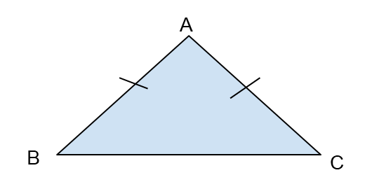
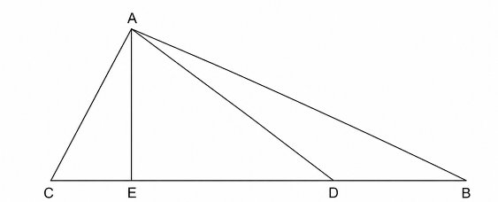

זמן ל – 3 שאלות מתקדמות


1. משרד אדריכלים מתכנן אלמנט הצללה עבור מדרחוב עירוני. חזית האלמנט מעוצבת בצורה של משולש שווה-שוקיים (AB = AC). המהנדס הראשי הגדיר תנאי גיאומטרי: היחס בין זווית הראש לסכום שתי זוויות הבסיס הוא 3 : 1.
א. חשבו את שלוש זוויות המשולש ABC.
אדריכל צעיר טען כי לא ניתן ליצר משולש כזה, מכיוון שזוויות הבסיס יצאו קהות (גדולות מ-90 מעלות), דבר שיגרום לכך שלא תיווצר צורת משולש.
ב. האם טענת האדריכל הצעיר נכונה?
רמז
במשולש שווה שוקיים זוויות הבסיס הן שוות.
2. הנקודה D נמצאת על צלע CB במשולש ABC.
נתון: היחס בין שטח משולש ACD לשטח משולש ADB הוא 3:1. שטח משולש ABC הוא 64 סמ"ר.
AE = 8 ס"מ (גובה המשולש).
השלימו:

3. משה וניסים עובדים במפעל לצבעים. כדי ליצור גוון מיוחד של "ירוק-זית", הם מערבבים שלושה צבעים: צהוב, כחול ושחור ביחס של 2 : 3 : 5 (בהתאמה). ביום ראשון, הם הכינו כמות גדולה של צבע והשתמשו ב-12 ליטרים של צבע שחור.
א. השלימו את הכמויות:
רותי, עובדת נוספת במפעל, רצתה ליצור גוון כהה יותר של אותו הצבע. כדי להגיע לגוון הרצוי, היא החליטה להכפיל פי 2 את כמות הצבע השחור בלבד, בעוד שכמויות הצהוב והכחול נשארו כפי שהיו ביום ראשון.
ב. איזה מהמשפטים הבאים מתאר נכונה את היחס החדש בין המרכיבים (צהוב, כחול, שחור)?
רמז
שימו לב, הצהוב מהווה 2 חלקים מהיחס, הכחול מהווה 3 חלקים והשחור מהווה 5 חלקים.